File list
This special page shows all uploaded files.
{kind=link}
{kind=link}
| Date | Name | Thumbnail | Size | User | Description | Versions |
|---|---|---|---|---|---|---|
| 18:04, 20 November 2022 | Skill set 3.png (file) |  |
33 KB | Miyu | 1 | |
| 19:28, 20 November 2022 | Skill set 4.png (file) | 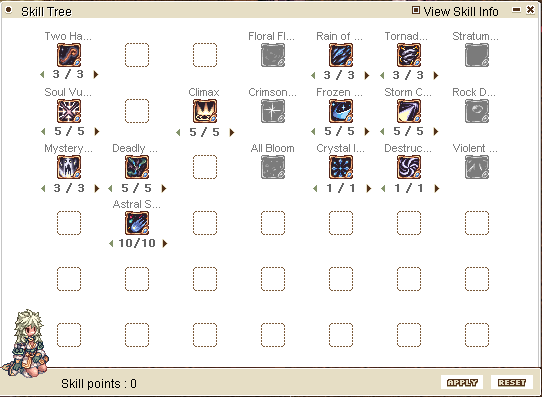 | 27 KB | Miyu | 1 | |
| 21:20, 20 November 2022 | Rkberserk.gif (file) | 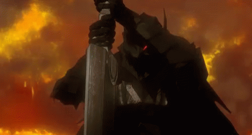 | 1.71 MB | Nithraniel | 2 | |
| 21:47, 20 November 2022 | Rkspiralpierce.png (file) | 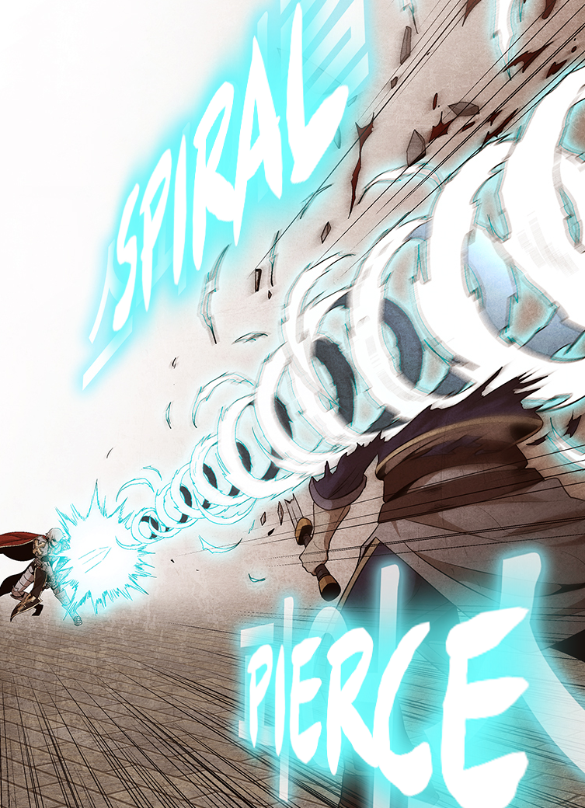 | 1.41 MB | Nithraniel | 1 | |
| 08:00, 22 November 2022 | EDNew.gif (file) | 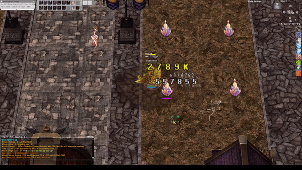 | 1.83 MB | G00suede | 1 | |
| 12:22, 29 November 2022 | ChibiIG.jpg (file) | 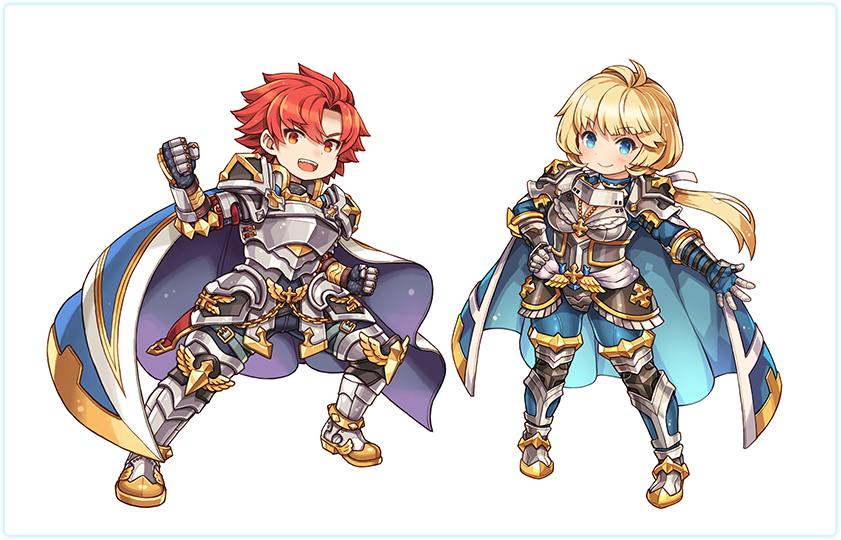 | 75 KB | G00suede | 1 | |
| 16:30, 3 December 2022 | Dragonknight.png (file) | 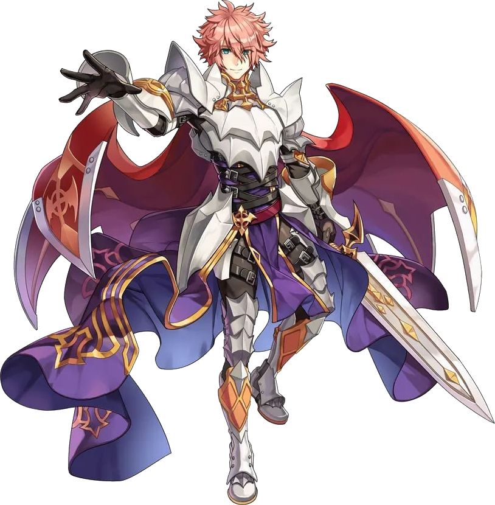 | 765 KB | Nithraniel | 1 | |
| 15:04, 5 December 2022 | Amicitia dungeon entrance1.png (file) |  |
38 KB | Drakamg | 1 | |
| 16:55, 5 December 2022 | Nifleheim dungeon entrance1.png (file) | 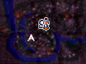 | 29 KB | Drakamg | 1 | |
| 22:01, 5 December 2022 | Rudus4 entrance.png (file) | 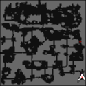 | 5 KB | Drakamg | 1 | |
| 01:34, 7 December 2022 | Edenizlu.png (file) | 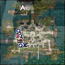 | 37 KB | Exos | 1 | |
| 03:13, 7 December 2022 | NightWatch.png (file) | 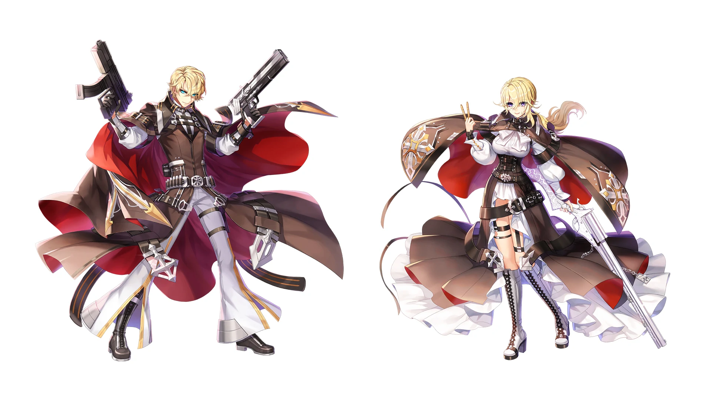 | 1.56 MB | Kancell | 1 | |
| 03:59, 7 December 2022 | Juststopit.png (file) | 542 KB | Kancell | 1 | ||
| 07:22, 8 December 2022 | Takewon Skills.png (file) | 10 KB | Tamugi | 1 | ||
| 07:49, 8 December 2022 | Soul Linker Skills.png (file) | 10 KB | Tamugi | 1 | ||
| 08:42, 8 December 2022 | Soul Reaper Skills.png (file) | 9 KB | Tamugi | 1 | ||
| 09:09, 8 December 2022 | Crimson Arrow Build 1.png (file) | 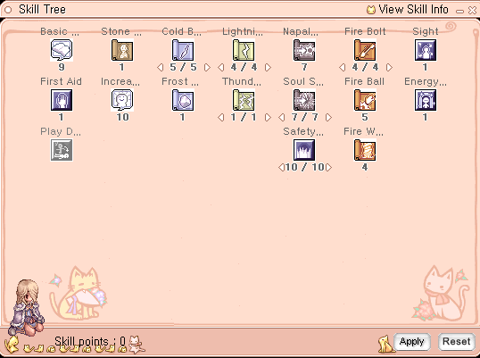 | 23 KB | Miyu | 1 | |
| 09:10, 8 December 2022 | Crimson Arrow Build 2.png (file) | 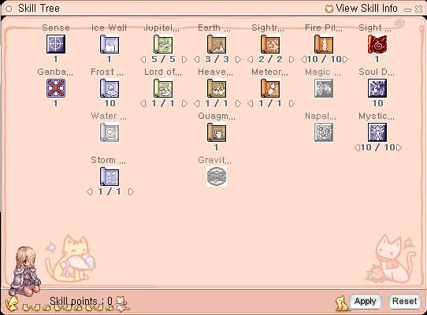 | 31 KB | Miyu | 1 | |
| 09:10, 8 December 2022 | Crimson Arrow Build 3.png (file) | 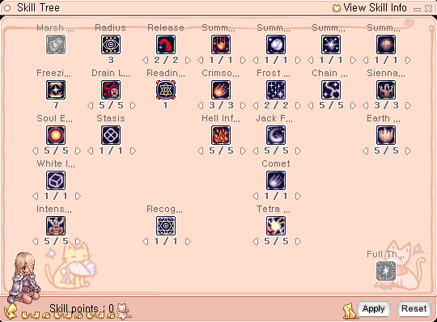 | 35 KB | Miyu | 1 | |
| 09:11, 8 December 2022 | Crimson Arrow Build 4.png (file) | 31 KB | Miyu | 1 | ||
| 09:27, 8 December 2022 | Soul Ascetic Skills.png (file) | 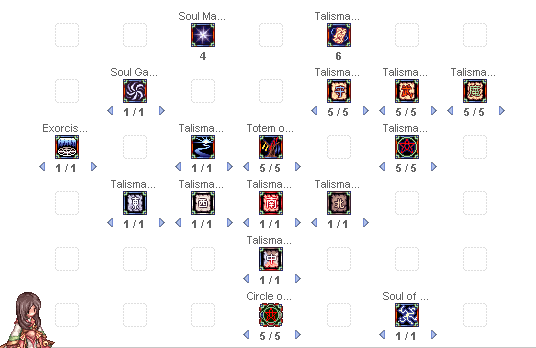 | 11 KB | Tamugi | 1 | |
| 10:07, 8 December 2022 | Frozen Slash Build 1.png (file) | 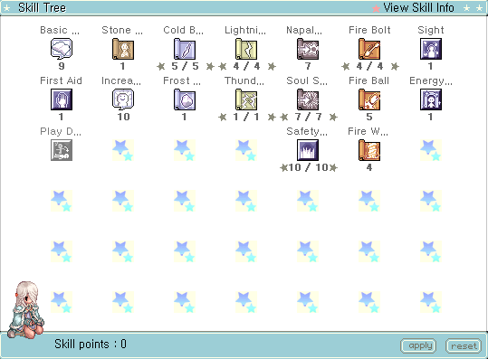 | 19 KB | Miyu | 1 | |
| 10:08, 8 December 2022 | Frozen Slash Build 2.png (file) | 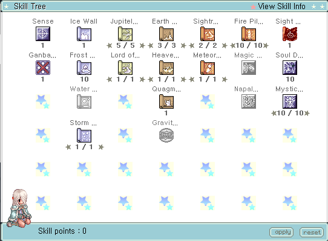 | 21 KB | Miyu | 1 | |
| 10:08, 8 December 2022 | Frozen Slash Build 3.png (file) | 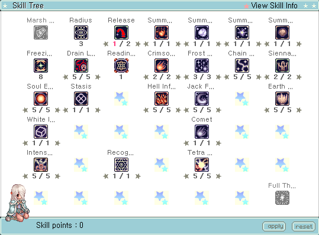 | 26 KB | Miyu | 1 | |
| 10:09, 8 December 2022 | Frozen Slash Build 4.png (file) | 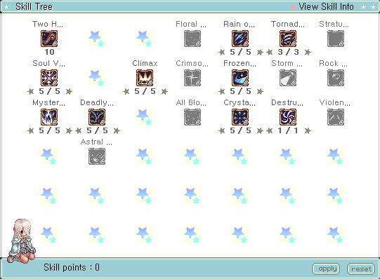 | 22 KB | Miyu | 1 | |
| 10:50, 8 December 2022 | Storm Cannon Build 1.png (file) | 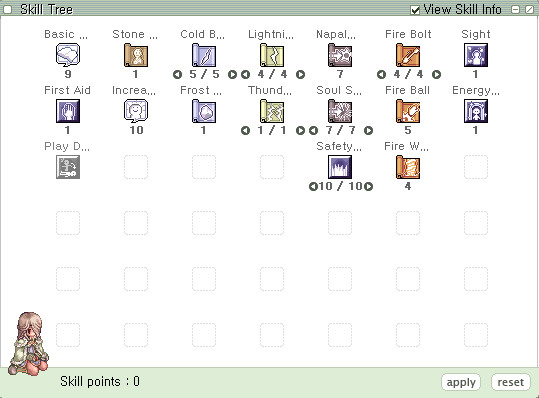 | 18 KB | Miyu | 1 | |
| 10:51, 8 December 2022 | Storm Cannon Build 2.png (file) | 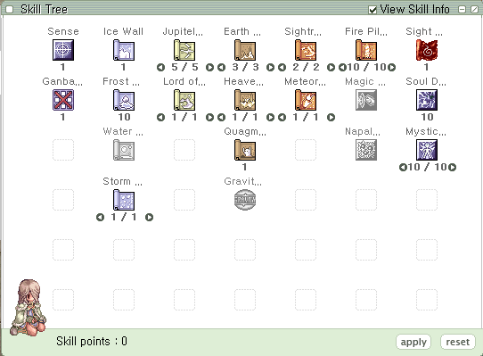 | 21 KB | Miyu | 1 | |
| 10:51, 8 December 2022 | Storm Cannon Build 3.png (file) | 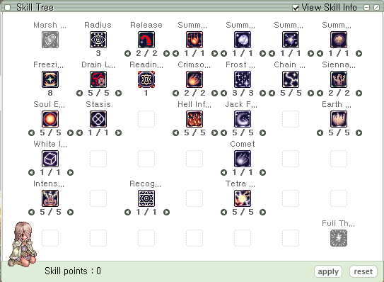 | 26 KB | Miyu | 1 | |
| 10:52, 8 December 2022 | Storm Cannon Build 4.png (file) | 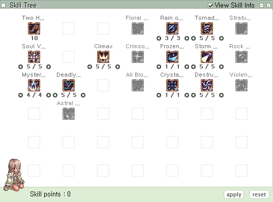 | 20 KB | Miyu | 1 | |
| 12:09, 8 December 2022 | Exorcism Solo Build 1.png (file) | 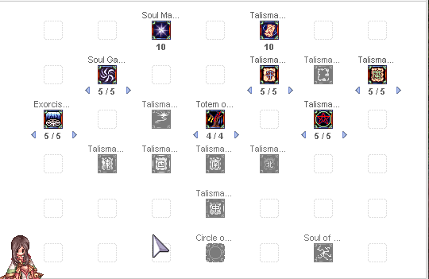 | 20 KB | Tamugi | 1 | |
| 12:12, 8 December 2022 | Exorcism Solo Build 2.png (file) | 11 KB | Tamugi | 1 | ||
| 12:43, 8 December 2022 | Rock Down Build 1.png (file) |  |
28 KB | Miyu | 1 | |
| 12:43, 8 December 2022 | Rock Down Build 2.png (file) | 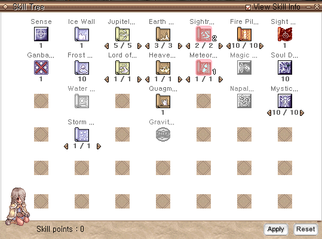 | 30 KB | Miyu | 1 | |
| 12:43, 8 December 2022 | Rock Down Build 3.png (file) | 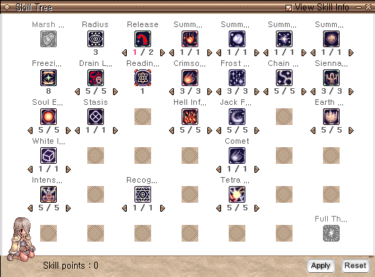 | 33 KB | Miyu | 1 | |
| 12:44, 8 December 2022 | Rock Down Build 4.png (file) | 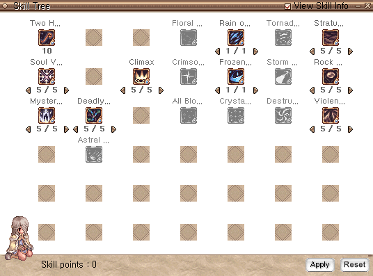 | 29 KB | Miyu | 1 | |
| 16:51, 8 December 2022 | Current Build Exorcism.png (file) | 78 KB | Tamugi | Reverted to version as of 15:53, 8 December 2022 (UTC) | 4 | |
| 16:54, 8 December 2022 | Current Build Exorcism of Malicious Soul.png (file) | 74 KB | Tamugi | 1 | ||
| 16:10, 9 December 2022 | Talisman Skillbuild.png (file) | 22 KB | Tamugi | 1 | ||
| 16:50, 9 December 2022 | Damage Tests Talisman.png (file) | 140 KB | Tamugi | 1 | ||
| 06:08, 10 December 2022 | Elemaster icon.png (file) | 1 KB | Melzdash | 1 | ||
| 15:46, 10 December 2022 | Evolved golem.gif (file) | 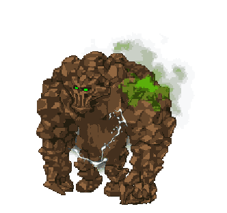 | 139 KB | Drakamg | 1 | |
| 15:47, 10 December 2022 | Assassin fly.gif (file) | 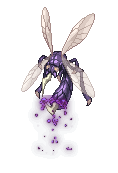 | 65 KB | Drakamg | 1 | |
| 15:47, 10 December 2022 | Evolved gazeti.gif (file) | 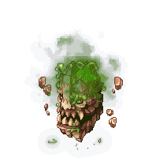 | 50 KB | Drakamg | 1 | |
| 15:47, 10 December 2022 | Evolved pupa.gif (file) | 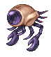 | 50 KB | Drakamg | 1 | |
| 15:48, 10 December 2022 | Mutated pupa.gif (file) | 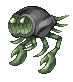 | 49 KB | Drakamg | 1 | |
| 15:48, 10 December 2022 | Sand striker.gif (file) | 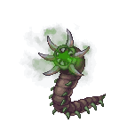 | 27 KB | Drakamg | 1 | |
| 15:48, 10 December 2022 | Hallucigenia fortis.gif (file) | 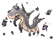 | 13 KB | Drakamg | 1 | |
| 17:41, 12 December 2022 | Reform-npc-mei.png (file) | 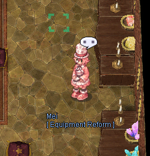 | 160 KB | Kruro | 1 | |
| 11:53, 13 December 2022 | Test Talisman 2.png (file) | 435 KB | Tamugi | 1 | ||
| 12:49, 13 December 2022 | NovaEXT Turbo.png (file) | 1.35 MB | Tamugi | 1 |
{kind=link}
{kind=link}
{kind=link}
{kind=link}
{kind=link}
{kind=link}
{kind=link}
{kind=link}
{kind=link}
{kind=link}
{kind=link}
{kind=link}
{kind=link}
{kind=link}
{kind=link}
{kind=link}
{kind=link}
{kind=link}
{kind=link}
{kind=link}
{kind=link}
{kind=link}
{kind=link}
{kind=link}
{kind=link}
{kind=link}
{kind=link}
{kind=link}
{kind=link}
{kind=link}
{kind=link}
{kind=link}
{kind=link}
{kind=link}
{kind=link}
{kind=link}